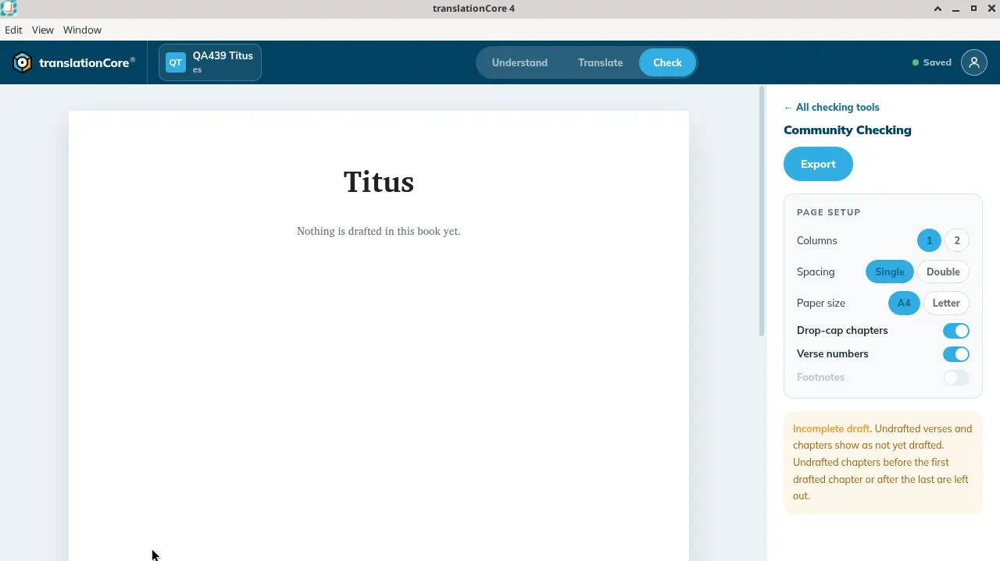
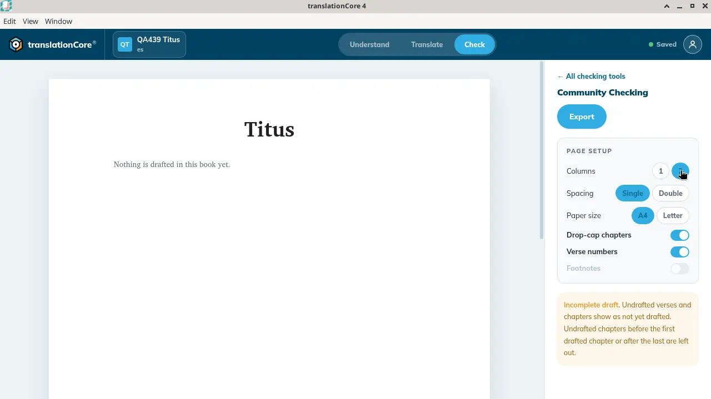
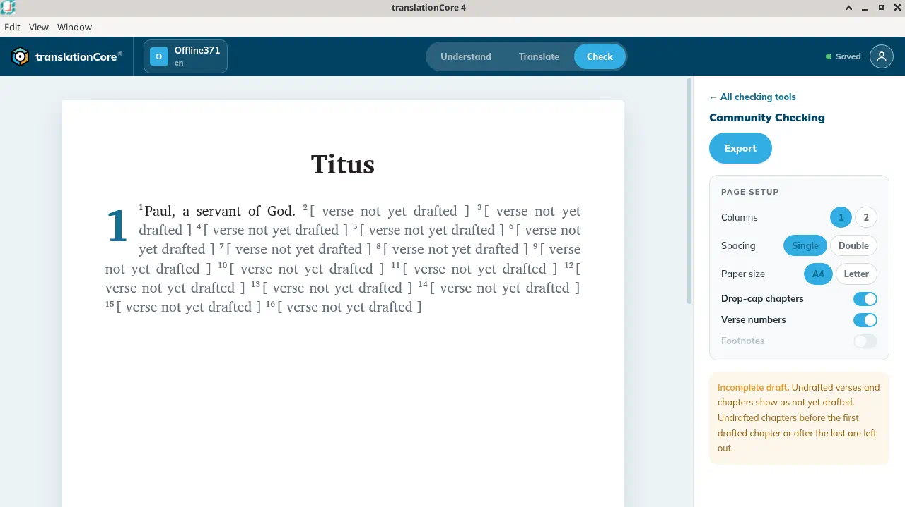
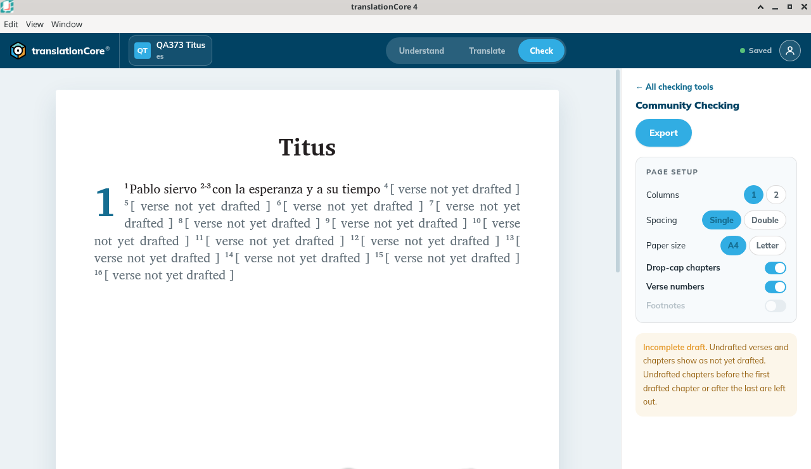
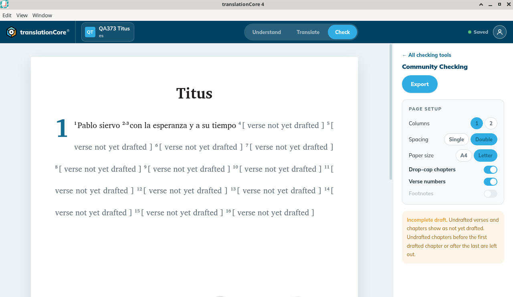

Community Checking preview
Read the whole book as a printed page, set up the page, and export a copy for reviewers.
Where in the app: Check › Community Checking card › Open →
What it is
Community Checking shows your book the way it will look when printed, so it can be read aloud or shared with the community for feedback.
When to use it
When you want to read the book as a whole, or make a copy for reviewers.
Step by step
- Click Check, then Open → on the Community Checking card. If the last checking tool you used opens instead of the list, click ← All checking tools.
- Scroll the preview.
- In Page setup, choose:
- Columns: 1 or 2
- Spacing: Single or Double
- Paper size: A4 or Letter
- Drop-cap chapters and Verse numbers: on or off
- Use Export to make a file. See Export a PDF, Export USFM and Export a Scripture Burrito.
Note: Spacing and Paper size arrived in 4.0 rc.1 (Increment 8, PRs #387 and #380; issues #142 and #381). The exported PDF uses them: with Letter selected, the PDF page is US Letter (8.5 × 11 in).
What you should see
- With nothing drafted, the page shows the book title and "Nothing is drafted in this book yet." It does not show a Preview eyebrow or per-verse placeholders.
- Page setup: Columns 1 or 2, Spacing Single or Double, Paper size A4 or Letter, Drop-cap chapters on, Verse numbers on, Footnotes off.
- Double doubles the line spacing in the preview, Single brings it back. Letter makes the page wider. Changing the page setup does not change the project: the save indicator stays on Saved.
- The note says Incomplete draft. Undrafted verses and chapters show as not yet drafted. Undrafted chapters before the first drafted chapter or after the last are left out.
Screenshots

Screenshot comingCommunity Checking for QA439 Titus. The page says Titus and Nothing is drafted in this book yet. Columns 1, Spacing Single, Paper size A4.
img/ck-community-checking-1.png
Screenshot comingThe same preview with Columns set to 2. The page still says nothing is drafted, so the two columns are only visible on the control.
img/ck-community-checking-2.png
Screenshot comingOffline371 Titus. Verse 1 prints Paul, a servant of God. Verses 2 through 16 say verse not yet drafted. Columns 1, Spacing Single, Paper size A4. Export was not clicked.
img/ck-community-checking-3.png
Screenshot comingBuild 79d3017, QA373 Titus: the preview prints Titus with a drop-cap 1, verse 1 Pablo siervo, the span 2-3 con la esperanza y a su tiempo, and [ verse not yet drafted ] for the rest. Page setup: Columns 1, Spacing Single, Paper size A4, Drop-cap chapters and Verse numbers on, Footnotes off.
img/ck-community-checking-4.png
Screenshot comingThe same preview with Spacing Double and Paper size Letter: the lines are spaced wider and the page is wider. The save indicator still says Saved.
img/ck-community-checking-5.pngTips
- Spacing Double is useful when reviewers want room to write between the lines of a printout.
- Changing the page setup only changes the preview and the export. It does not change your project, so the save indicator stays on Saved.
- The card on the picker says "Next · read {chapter} aloud" to suggest a reading plan.
- On Offline371 the preview title is Titus. Verse 1 prints "Paul, a servant of God." The comma and the period are here, unlike the Translation Words and Translation Notes panes, which show "Paul a servant of God". Verses 2 through 16 each say "[ verse not yet drafted ]". Chapter 1 is shown because it has a drafted verse. Columns is 1, Spacing is Single, Paper size is A4. Drop-cap chapters and Verse numbers are on. Footnotes is off and cannot be switched on. Export was not opened, and the setup was not changed.
Known limits
- Footnotes is shown but cannot be switched on yet.
- Page setup is not remembered after you leave the screen, and each book starts on Columns 1, Single, A4. Set it again before you export.